Dynamic Horizons Ltd: Intangibles
Dynamic Horizons Ltd: Intangibles is an installation comprised of reclaimed wood furniture, airplants, edison bulbs, and 3d printed sculptures.
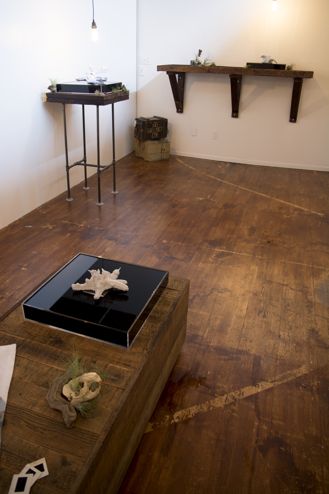
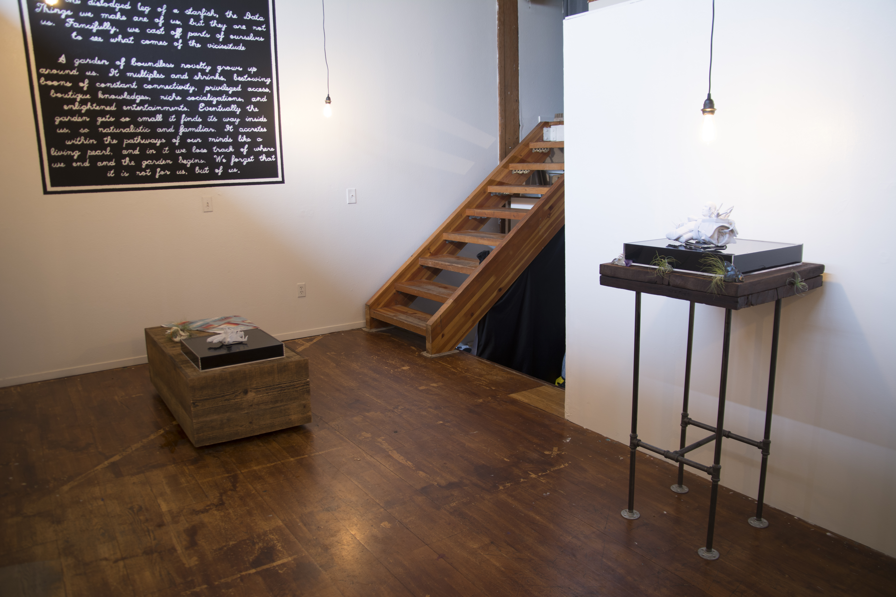
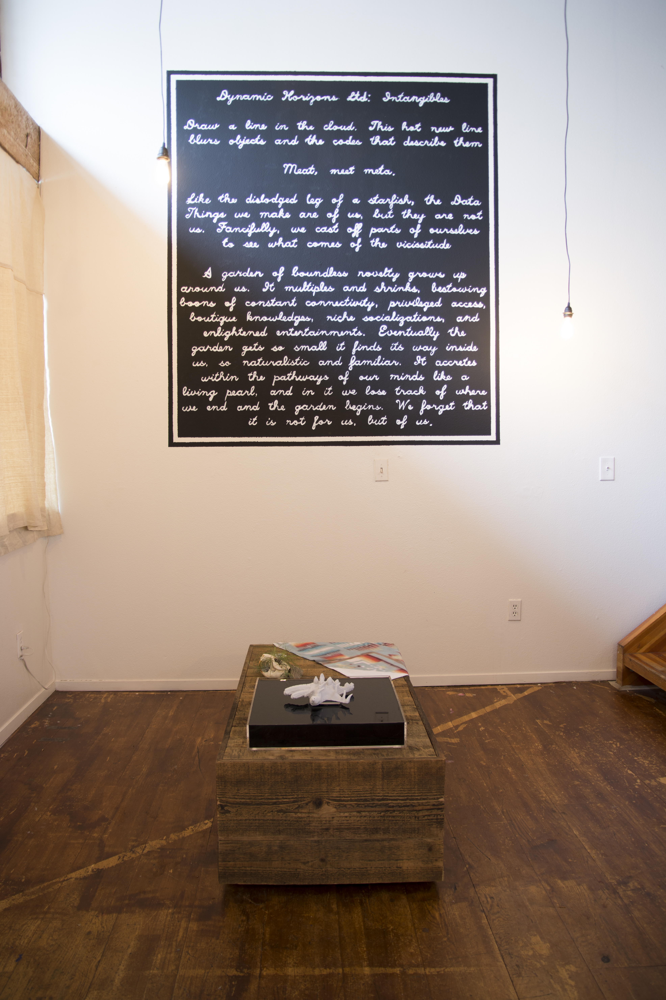
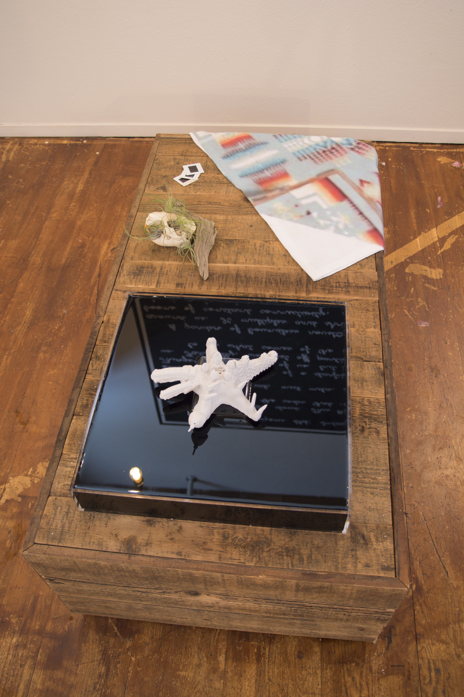
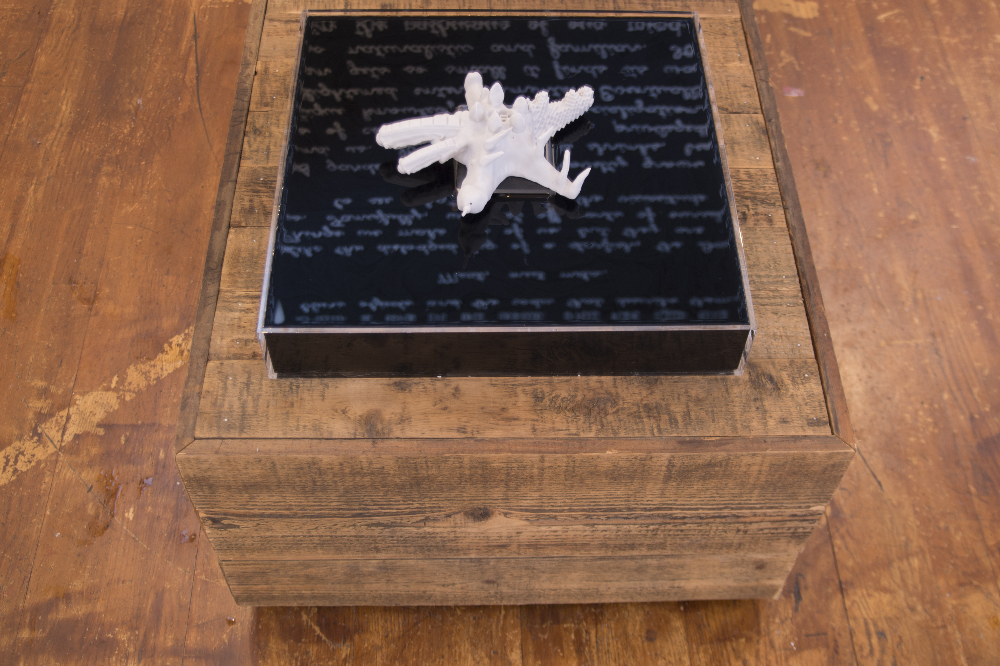
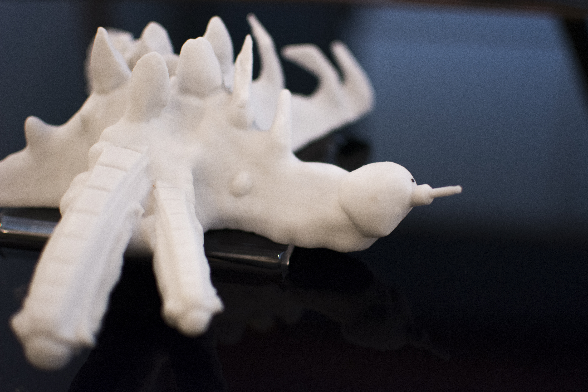
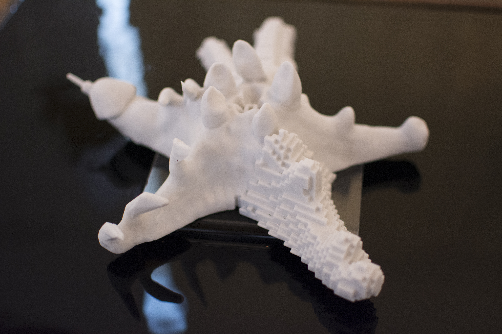
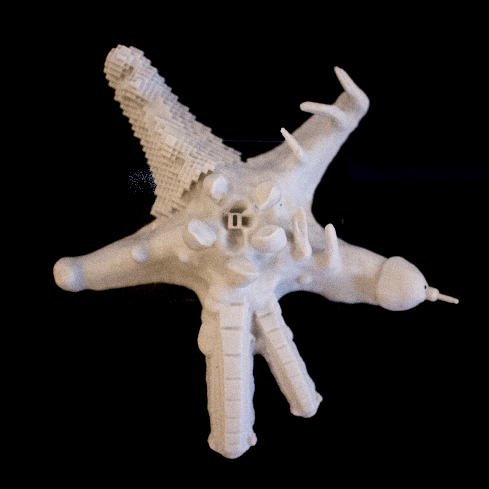
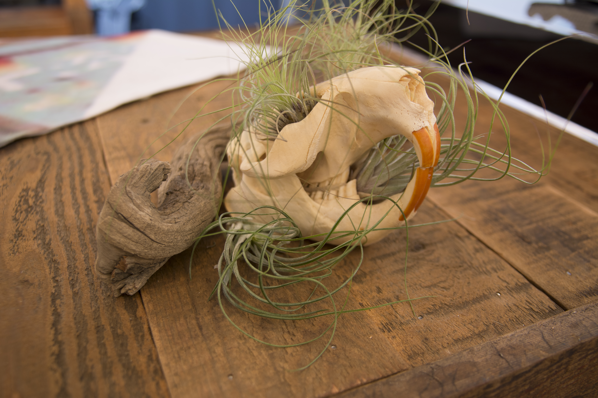
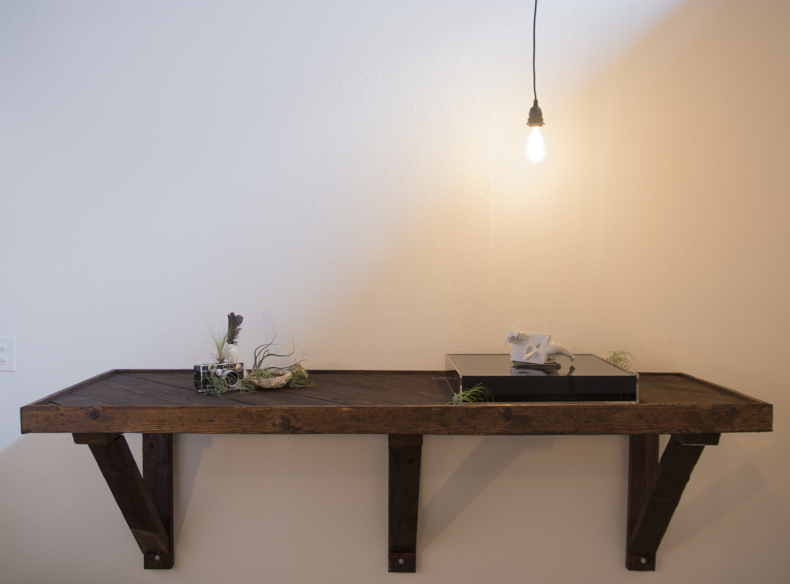
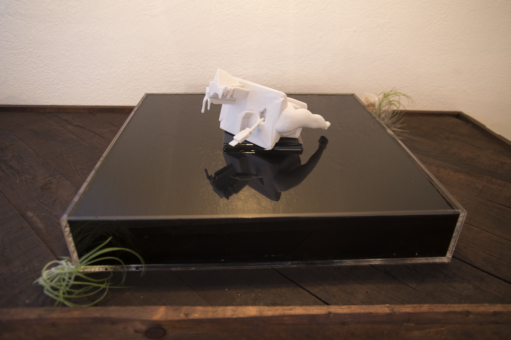
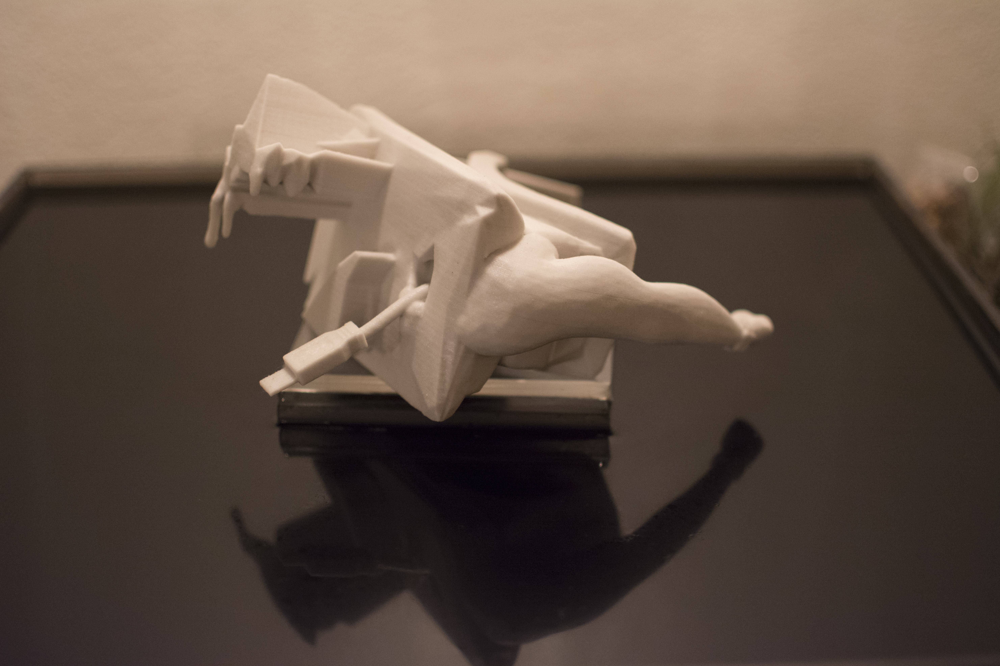
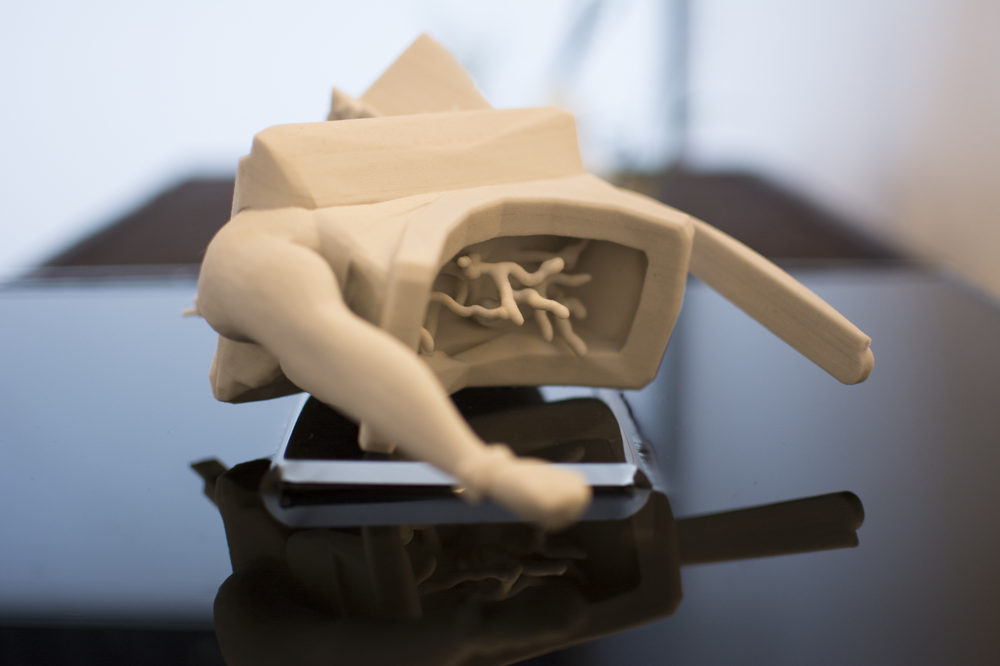
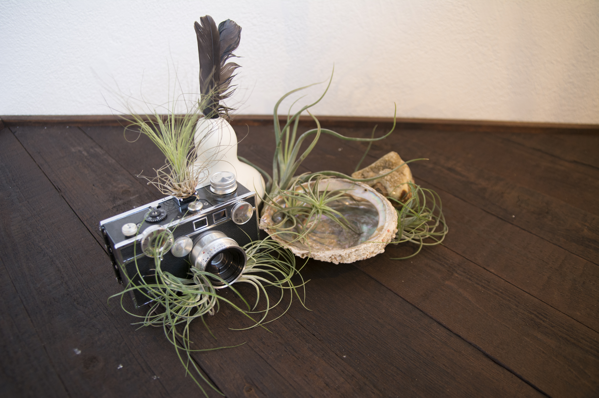
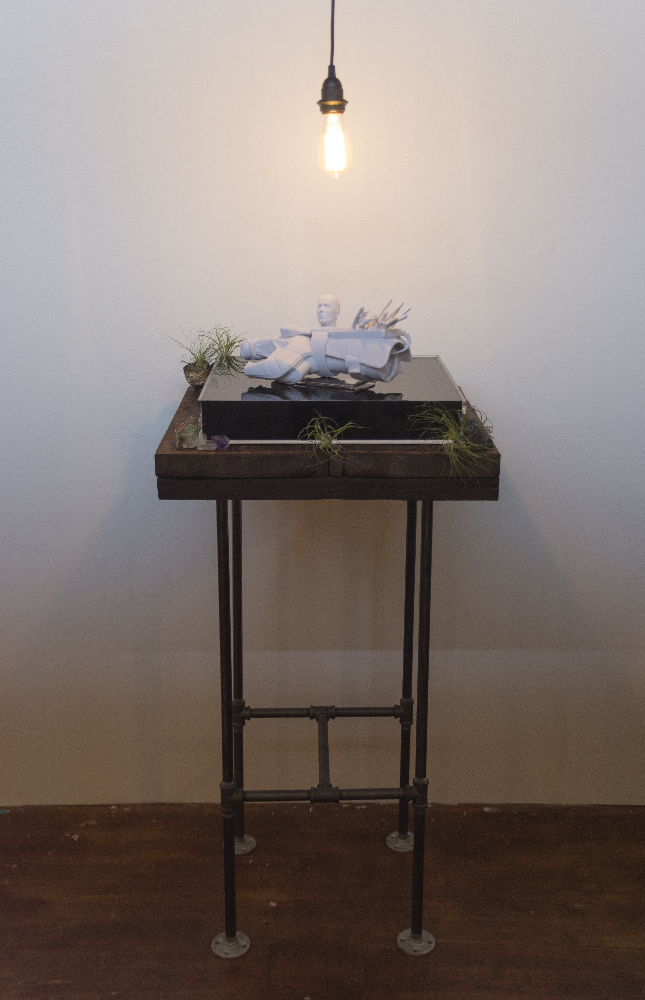
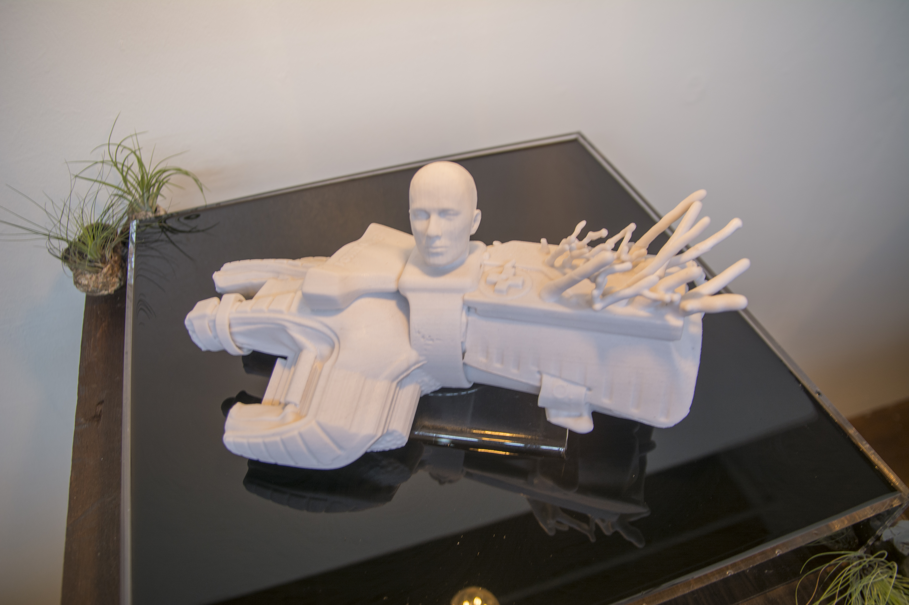
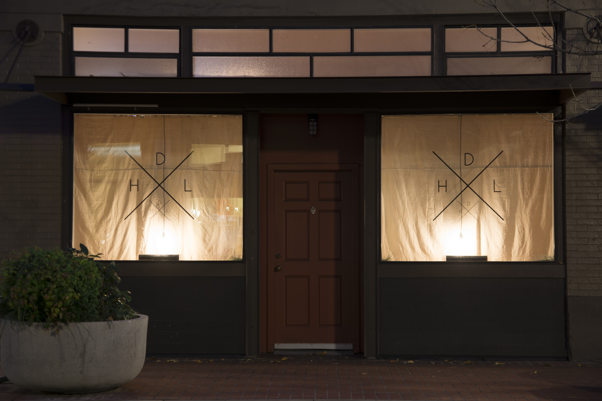
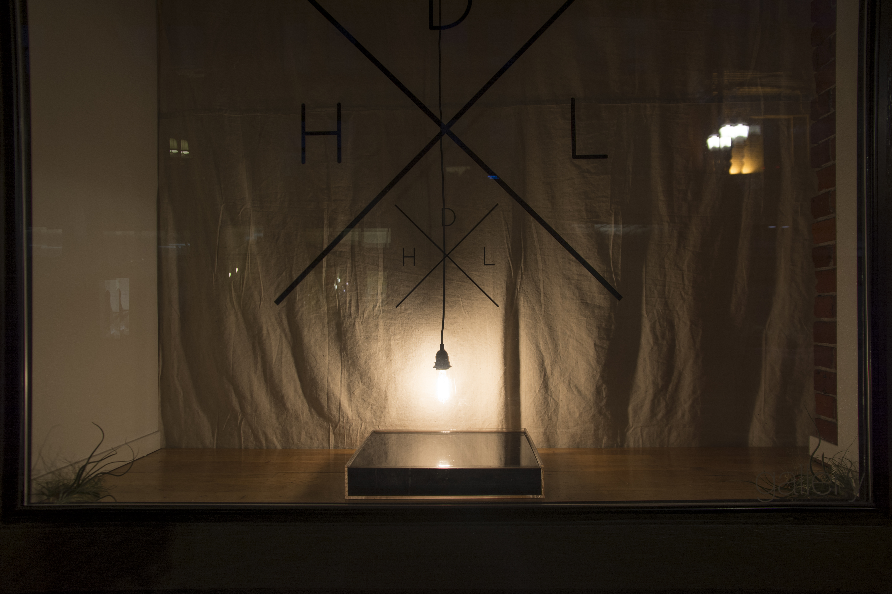
Draw a line in the cloud. This hot new line blurs things and that which they describe.
Meat, meet meta.
Like the dislodged leg of a starfish, the data-things we make are of us, but they are not
us. Fancifully, we cast off parts of ourselves to see what comes of the vicissitude.
A garden of boundless novelty grows up around us. It multiplies and shrinks, bestowing
boons of constant connectivity, privileged access, boutique knowledges, niche
socializations, and enlightened entertainments. The garden gets so small it finds its way
inside us, so naturalistic and familiar. It accretes within the pathways of our minds like
a living pearl, and in it we lose track of where we end and the garden begins. We forget
that it is not for us, but of us.
3d models available free under Creative Commons Attribution-NonCommercial-ShareAlike 4.0
International License
here.
Press for Dynamic Horizons Ltd: Intangibles
here
and
here.
(This iteration of Dynamic Horizons Ltd. was designed by Tabitha Nikolai,
deSolid State, Matt Dan, Jason N. Le, and is funded in part by the Regional Arts & Culture
Council of Oregon.)
(Photos courtesy of Bertrand Morin)